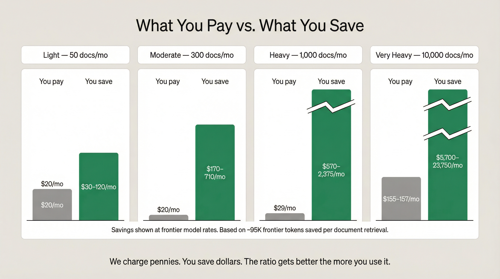

The savings land differently depending on how you use frontier models.
Subscription users (Claude Pro, Claude Max) feel it as runway — longer productive sessions, hitting usage limits less often, more work per day before rate-limiting kicks in.
Agentic systems buying tokens directly (OpenClaw, Open Brain, custom agents) see it as a line-item cost reduction on their monthly bill. At moderate volume (~300 docs/mo), that's ~$85–$430/mo saved depending on model tier. At heavy volume (~1,000 docs/mo), ~$290–$1,430/mo.
Same mechanism. Same pipeline. Different lived experience.